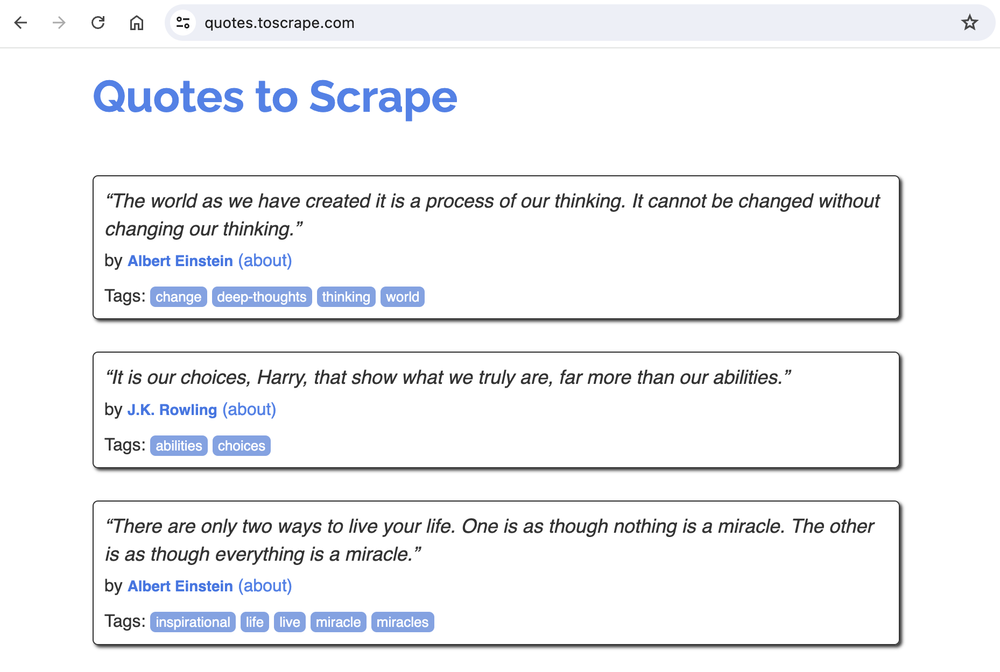

Intro to Web Scraping with the Scrapy Package
Web scraping is the automated process of extracting data from one, or more, websites. Automation allows for the collection and analysis of large volumes of web-based information efficiently. Utilizing tools and programming languages such as Python, web scraping involves sending requests to websites, parsing the HTML content, and retrieving specific data points like text, images, or links. This technique is widely used in various fields, including data analysis, market research, and content aggregation, allowing businesses and individuals to gather valuable insights and make informed decisions based on real-time web data.
A version of the code mentioned in this post can be viewed on GitHub.
Scrapy Package
While I have tried several different packages & methods for web scraping, my current favorite is the Scrapy package. Scrapy is nn open-source, collaborative framework for effortlessly extracting the data you need from websites, offering a fast, simple, and highly extensible solution. The package is well documented and I would encourage you to visit their website link above.
Prerequisite Knowledge
Since we are looking to extract data returned in an HTTP request, it would be helpful to have some foundational knowledge about:
- HTML: need to know common tags
- CSS: recognize styling selectors
- HTTP requests
- GET
- POST
- Status codes
If you are not familiar with HTTP requests, here is a quick review. A GET request is what happens when your browser requests an HTML page from a server. A POST request is what happens when you submit a form. Status code 200 is good; 300-level indicates some type of redirect; 400-level means there is an error with the request; 500-level means there is an error with the server. Of course, there’s much more to the Hypertext Transfer Protocol (HTTP) but this will get us started.
Finding Something to Scrape
For this post, we are going to use an easy target for scraping. These two website were created explicitly for developers to practice:
Of the two, the quotes is a bit easier so we will use that one.

Looking at the website, notice that there appear to be 10 quotes on the page. Further scrolling to the bottom, we can also see there is pagination and more quotes on subsequent pages.
Additionally, take a look at the source code for the website (usually viewable by selecting view - source). The source code contains div tags with class="quote", span tags with class="text", and small tags with class="author". I think we will find these items useful.
Starting the Project
To get started, we need to create a folder for this project, spinup a virtual environment, and install Scrapy.
$ mkdir scrapy_quotes
$ cd scrapy_quotes
$ pipenv shell
$ pipenv install scrapy
Next, we need to run a command that will create the infrastructure for the project. Please note that the folling command ends with a “period” or “dot”. That is important as we are already inside the folder for this project.
$ scrapy startproject quotes .
The above command creates this structure:
scrapy_quotes/
scrapy.cfg # deploy configuration file
quotes/ # project's Python module
__init__.py
items.py # project items definition file
middlewares.py # project middlewares file
pipelines.py # project pipelines file
settings.py # project settings file
spiders/ # a directory where you'll later put your spiders
__init__.py
A Little Exploration
Let’s confirm we can obtain a HTTP response and see what it contains. To do that, we enter an interactive shell environment and send a request.
$ scrapy shell
Inside the interactive environment, we can use specific Scrapy commands.
url = 'https://quotes.toscrape.com/'
fetch(url)
Notice that the fetch command returns the following output:
[asyncio] DEBUG: Using selector: KqueueSelector
[scrapy.core.engine] INFO: Spider opened
[scrapy.core.engine] DEBUG: Crawled (404) <GET https://quotes.toscrape.com/robots.txt> (referer: None)
[scrapy.core.engine] DEBUG: Crawled (200) <GET https://quotes.toscrape.com/> (referer: None)
And we now have a response object that contains the HTTP response.
response.status
200
Remembering that the HTML source code for the quotes website had certain tags with useful information about the quotes and authors, we can access those items.
response.css('div.quote')
Notice that there are 10 items. This is expected and we are on the right track.
I am going to put the quotes into a list and then select a single quote for further data extraction.
quotes = response.css('div.quote')
quote = quotes[0]
quote.css('small.author::text').get()
'Albert Einstein'
I also want to extract the quote text but it has a weird character at the beginning and ending of the text so I will use the replace() method to remove those.
quote.css('span.text::text').get().replace('“', '').replace('”', '')
'The world as we have created it is a process of our thinking. It cannot be changed without changing our thinking.'
Leave the interactive environment using the exit() command.
Creating a Spider
Now to create a spider that will crawl the website. We do this by creating a class that will inherit from the scrapy.Spider class. Our class will need at least three pieces of information:
- name of the spider
- url or urls to scrape
- a
parse()method with logic for parsing the response.
# quotes/spiders/quote_spider.py
import scrapy
class QuoteSpider(scrapy.Spider):
name = 'quotes'
start_urls = ['https://quotes.toscrape.com/']
def parse(self, response):
quotes = response.css('div.quote')
for quote in quotes:
yield {
'author': quote.css('small.author::text').get(),
'text': quote.css('span.text::text').get().replace('“', '').replace('”', '')
}
next_page = response.css('li.next a').attrib['href']
if next_page is not None:
yield response.follow(next_page, callback=self.parse)
Pagination
After the for loop, notice that our parse() method looks for a li tag with the next class. This logic will let us know if there is a next button which indicates there are more quotes to scrape in a following page.
If the next button exists, our logic will follow that link by requesting the next page and contining to parse the new response.
Crawling the Website
From the command line, we can issue the crawl command.
$ scrapy crawl quotes -O quotes.csv
Let’s break down the command:
- scrapy crawl <- this is the crawl command
- quotes <- the name we gave the spider
- -O quotes.csv <- this indicates we want the output placed in csv file
As a final note, we could have also designated to create a quotes.json file instead of a csv file.